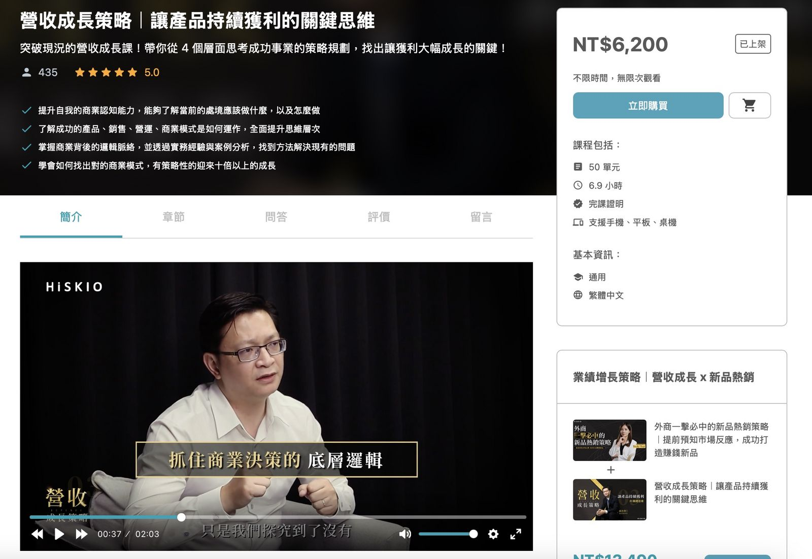
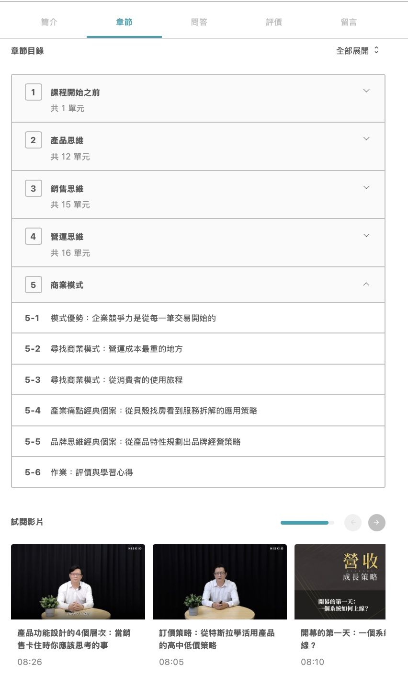
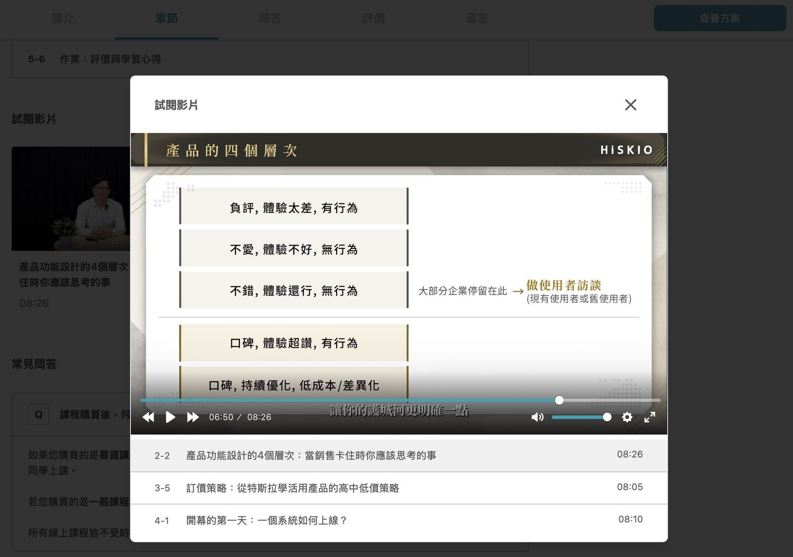
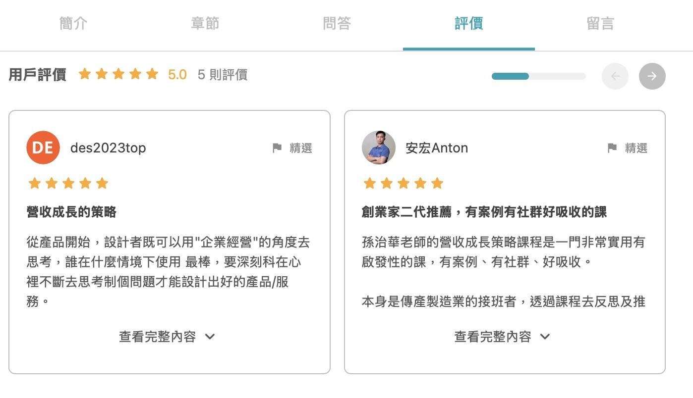
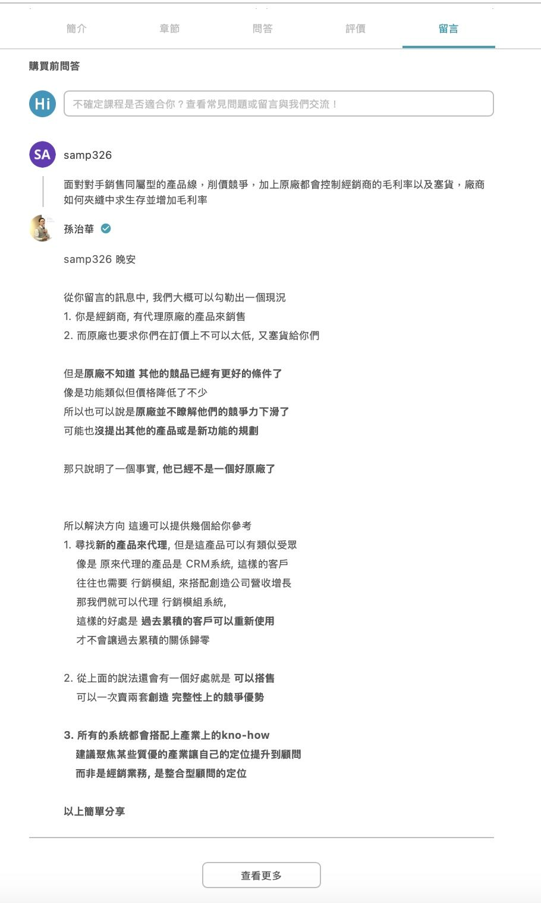

購買課程前，你可以透過以下幾個管道確認課程是否符合自己的需求。
1. 查看課程介紹
藉由課程的【簡介】了解課程的學習價值，部分課程也會附上介紹影片，協助你掌握課程內容與學習目標。

2. 查看章節目錄
點擊【章節】或滑動至簡介結束後，會抵達【章節目錄】區塊。
這裡會顯示課程的單元有哪些（一般課程顯示實際單元名稱，募資課程則顯示預計單元名稱），幫助你了解課程的實際編排架構、以及每個單元中能學到什麼。

試閱影片
如果課程提供【試閱影片】，可以在這裡搶先觀看部分影片，了解講師的講述內容與風格。點擊想觀看的單元後即可直接播放，親自體驗上課。

3. 查看評價
點擊【評價】或滑動至問答結束後，會抵達【用戶評價】區塊。這裡會顯示上過課程的同學的真實想法，幫助你從同學的角度了解課程的更多價值。
點擊【查看完整內容】可看見同學的完整評價及更多內容。

4. 直接向老師發問
如果看完以上仍有疑問，可以在【留言】區塊向老師提問。提問後，HiSKIO 會通知老師進行回覆。
你也可以點擊【查看更多】，瀏覽已經被解答的其他同學的疑問——或許剛好有你想問的問題。

更新時間： 07/05/2026